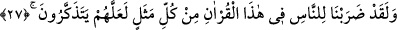

buyurduğunu işittim: “Musa’nın kavminden bir adam vefat etti. Kıyamet günü olunca
Allah meleklerine: “Bakın bakalım bu kulumun amellerinden bir şey bulacak mısınız?”
buyurur. Melekler: “Yüzüğüne “Lâilâhe illâllah” kelimesinin nakşedilmiş olmasından
başka onun bir amelini bulamıyoruz.” derler. Bunun üzerine Allah Teâlâ: “Kulumu
cennete koyun, onu bağışladım.” buyurur.
Tevhîd, zâhire nakşedilmesiyle bile insanı cehennemden kurtarır ise, bâtına
nakşedilmesi hakkında bir düşünün nasıl olur! Öyleyse nefsi ıslah etmek, yakîni
güçlendirmek, İslâm ve din nimetine hamd etmek için çalışmak gerekir.
Ebû Ali Nesefî’den hikâye edilmiştir ki: Bir müslüman eşeğini kaybetti ve onu
aramaya çıktı. O sırada bir mecusi karşısına çıktı. Mü’min onun yanından hemen
uzaklaşarak şöyle dedi: “Allah’ım! Ben bineğimi kaybettim, bu adam ise dinini
kaybetmiş. Onun musîbeti benimkinden daha büyük. Benim musîbetimi onun musîbeti
gibi kılmayan Allah’a hamd olsun!”
Bu, sadece şu vakte ve hâle göredir. Âhiretteki durum ise çok daha çetrefillidir.
Nitekim Mesnevi’de şöyle der:
Hiç kâfire hor gözle bakmayın,
Umulur ki Müslüman olarak ölür.
Ömrünün sonundan ne haberin var ki
Ondan tamamen yüz çeviriyorsun?
Tevfik sadece Allah’tandır.
27. Andolsun ki biz, öğüt alsınlar diye, bu Kur’an’da insanlara her türlü misâli
verdik.
“Andolsun ki biz,” düşünüp “öğüt alsınlar diye, bu Kur’an’da insanlara” bakıp
düşünen kimsenin diniyle ilgili hususlarda ihtiyaç duyacağı “her türlü misâli verdik.”
Semerkandî der ki: “Andolsun biz Kur’an’da insanlara, gariplik ve güzellik
açısından dillerinde dolaşıp duran mesellere benzeyen her sıfatı açıkladık. Önceki
ümmetlerin kıssası, kıyamet günü diriltileceklerin ve bunlardan başka hayret verici
mâhiyetteki bütün kıssaları onlara anlattık.”
el-Vasît’ta bildirildiği gibi buradaki “insanlar”dan maksad Mekke halkıdır.
Bazılarının söylediği ‘Kur’an’da “Ey insanlar!” şeklinde geçen bütün hitapların Mekke
halkına olduğuna’ dâir söz de bunu desteklemektedir. Fakat ibârenin zâhirinden
anlaşılan, bu kelimenin Mekke halkına ve onlardan sonra gelenlere genel olduğudur.